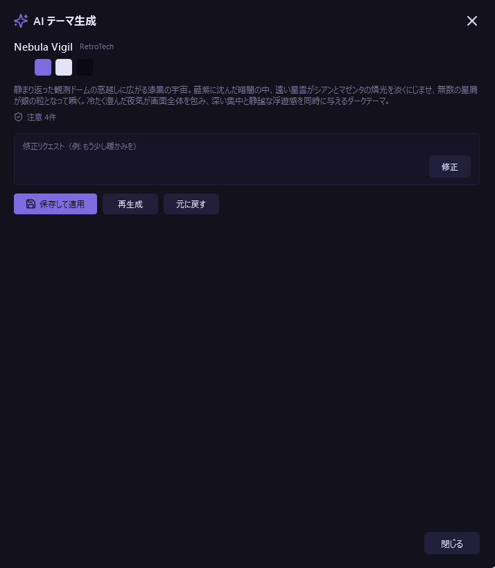

生成 AI の機能¶
AI テーマ診断¶
- 操作: Control Deck → テーマ → AI テーマ診断
- しくみ: 3〜5 回の多肢選択式質問に回答すると、50 テーマの中からベストマッチを推薦します。
- 推薦理由を添えてテーマを提案し、そのまま適用可能。
- Pro 機能（無料版 3 回/日、テーマ生成と共有）。
AI テーマ生成¶

- 操作: Control Deck → テーマ → AI テーマ生成
- しくみ: 自然言語（例: 「宇宙をイメージした暗めのテーマ」）で指示すると、テーマの全色を使ったオリジナルテーマを生成します。
- ライブプレビューで即座に確認 → 微調整リクエスト → 保存。
- 生成テーマは「AI Generated」カテゴリに追加され、カテゴリは色彩解析で自動分類されます。
- 本文コントラスト・彩度・アクセントの一貫性など35項目の品質検証が自動で行われ、基準に届かない場合はAIによる自動修正・ローカルでの自動補正を経て読みやすさが確保されます。
- ダイアログの構成: 上から「基本設定」→「カラー・配色」→「トーン」→「世界観」の順に並び、各セクションには「ここで何を決めるのか」の解説が付いています。生成ボタンはフッター（「閉じる」の隣）にあります。すべての選択は任意で、指定しなかった項目は AI が判断します。
- ツールチップ: 明るさ・鮮やかさ・カラー・雰囲気・情景のすべての選択ボタンにカーソルを合わせると、「選ぶとどんな配色・印象になるか」の説明が表示されます。名前だけでは分からないタグも、ホバーで効果を確かめてから選べます。
- 基本設定: テーマ名 → テーマの概要説明（自由入力）→ 固有名詞をぼかす、の順に入力します。概要とチップのいずれも空のままでは生成できません。
- カラー・配色: 色を UI 上の役割ごとに指定できます（各行1つだけ選択・既定は「おまかせ」）。
- メインカラー: 背景・ベタ面（ベースカラー）
- サブカラー: タイル、カード、章背景など。色のほか「メインと同系色」「メインと対比する色」という関係でも指定できます
- ワンポイント: 特定のアクセント、アクティブ状態など
- フォントカラー: すべてのテキストの傾向（「おまかせ（背景と調和）」「明確な黒」「明確な白」）
- 選べる色は、色相系（青・緑・紫・赤・ピンク・オレンジ茶・金黄・シアンティール・モノトーン・カラフル）に加え、トーン・質感系（白アイボリー・黒漆黒・グレー無彩色・パステル・くすみアース・ビビッドネオン・メタリック・クリア透明感）があります。
- トーン: 明るさ（おまかせ / ライト / ダーク）と鮮やかさ（おまかせ / 控えめ / 標準 / 鮮やか）を選びます。
- 世界観: 雰囲気・ムード（シンプル・実用 / エモーショナル / ファンタジー・ダーク）と情景・素材（日常・自然・素材 / SF・テクノロジー / ファンタジー・異世界）から複数選択できます。各カテゴリには傾向の解説が付いています。
- NG指定（右クリック）: 雰囲気・情景のタグを右クリックすると、「このテーマには絶対に入れたくない」というNG指定（青背景＋打ち消し線）になります。AI はその方向を配色・素材・光・シルエット・テーマ名・説明文のいずれにも出さず、連想される色相にも寄りません。NG指定は採用したタグや概要説明の内容よりも優先されます。もう一度右クリックすると解除、採用中のタグを右クリックするとそのままNGへ切り替わります。NG指定だけを指定して生成することもできます（テーマのタグとしては保存されません）。
- 「選択をクリア」（カラー・配色の見出し右）を押すと、カラー・トーン・世界観のすべての選択が解除され、各行が「おまかせ」に戻ります。
- 固有名詞をぼかす（権利保護を推奨）: 概要説明欄の直下にあるチェックボックス（既定オン）で切り替えます。オンのときは、生成されるテーマ名と説明文から固有名詞（キャラクター名・作品名・ブランド名・実在人物名など）を一切除き、配色や雰囲気だけを残します。テーマ名は AI が固有名詞を含まない喚起的な英語名を自動生成して付与し（例:「エヴァ初号機」→「Berserker Violet」）、説明は色・光・素材・ムードのみで表現します。このぼかしは「削除」ではなく「翻訳」として働きます: 元ネタの象徴的な配色の組み合わせ・素材・光源・シルエット・時代感を1つずつ固有名詞ゼロの言葉へ置き換えるため、ぼかしをオンにしても説明の分量や具体性は落ちません。オフのときは従来どおり、入力したテーマ名がそのまま使われ、説明もコンセプトを反映しますが、著作権・商標権を含むテーマが生成される可能性があります。個人利用は問題ありませんが、公開・共有する場合は権利侵害にご注意ください。設定はアプリに記憶されます。
AI テーマ調整¶
- 操作: テーマカードを右クリック →「AI で調整」
- しくみ: 自然言語で色味の変更を指示（例: 「もう少し暗く」「アクセントを赤系に」）。即座にプレビューに反映されます。
- カスタマイズダイアログは非モーダルで表示されるため、ダイアログを開いたままアプリのファイル一覧やナビペインを操作し、実際の画面で適用結果を確認してから保存できます。
- WCAG コントラスト基準による自動検証が行われ、読みやすさが確保されます。
- 「固有名詞をぼかす」設定がオンのときは、既存テーマのカスタマイズでも説明文から固有名詞を排除します（カスタマイズでは改名は行いません）。
AI フォルダ分析¶
- 場所: ナビペインの AI フォルダ分析ビュー（AI フォルダオーガナイザー）
- 分析: 「分析」ボタンで、フォルダ内容を AI が 3 セクション構造（📊 現状分析 / ⚠️ 問題点 / 💡 改善提案）でレポート。
- アクション生成: YES/NO で承認すると、具体的なアクション（フォルダ作成・移動・名前変更、最大 30 件）を生成。
- 実行: チェックボックスで個別選択 → 一括実行 → Undo（
Ctrl+Z）対応。 - チャット形式で追加指示が可能。チャット履歴の Markdown エクスポートにも対応。
- Pro 機能（無料版 3 回/日）。
AI マニュアル（ヘルプ Q&A）¶
- 場所: ナビペインの AI マニュアルビュー、またはドキュメントビューアのダイアログから利用。
- しくみ: 自然言語でアプリの使い方を質問すると、マニュアル内容を自動検索し的確に回答。
- アプリの設定項目・キーバインド・テーマ一覧なども回答対象。
- Markdown レンダリング対応、長い回答はバブル分割表示。
- 回答の下に参考にした記事（最大 3 件）が並び、押すとマニュアルのその記事の該当する見出しが開きます。ダイアログから開いた場合は、ダイアログを閉じてからマニュアルが開きます。
- 表示言語が日本語・英語以外のときは、英語のマニュアルを元に、表示言語で回答します。
- Pro 機能（無料版 3 回/日）。
AI タブ管理¶
- 場所: ナビペインの AI タブ管理ビュー
- スコアリング: 頻度 30% + 滞在時間 30% + 直近性 40% でタブを評価し、ロック/クローズを提案。
- ワーキングセット検出: A+B ペインの共起パターンからワーキングセットを自動検出。
- 関連フォルダ提案: 共起履歴から関連フォルダを提案。
- タブヘッダーにインジケーター表示、「すべて適用」で一括操作。
- Pro 機能（無料版 3 回/日）。
AI 稼働統計分析¶
- 操作: Control Deck → 統計 → 上部の「AI 稼働統計分析」セクション
- しくみ: 「分析」ボタンで 7 データソースをクロス分析し、最大 7 種のインサイトを提供。
- インサイト例: お気に入り未登録の頻出フォルダ検出、隠れたワークフロー発見、検索最適化提案、Quick-flip タブ検出、未活用機能の提案、死んだお気に入り検出、操作スタイルの偏り分析、2 画面活用度の評価。
- 各インサイトは「発見 + 具体的アクション提案」のセットで表示。
- Pro 機能（無料版 3 回/日）。
AI ファイル名提案¶
- 場所: ファイル/フォルダ名前変更ダイアログ内の「AI 提案」セクション
- しくみ: 親フォルダの構造、兄弟ファイルの命名規則、リネーム履歴を考慮し、3〜5 件の候補を提案。
- 回数制限なし（無料）。
AI お気に入り整理¶
- 場所: ナビペインの AI お気に入り整理ビュー
- しくみ: お気に入りの構成を AI に分析・最適化させることができます。コンテナの分類提案、名前の改善、カスタムアイコンの自動付与に対応しています。
AI バックアップサマリー¶
- 場所: 設定バックアップ時に自動実行
- しくみ: 設定バックアップ時に、変更内容の要約を AI が自然文で自動生成します。バックアップ一覧で各バージョンの変更概要を確認できます。
AI フォルダ生成¶
ペインヘッダーのフォルダ作成アイコン横の ✨ ボタンから、AI にフォルダ構成の生成を依頼できます。
- プロンプト入力: 作成したいフォルダの用途や目的を自然言語で記述します。できるだけ具体的に（対象期間、分類基準、命名規則の希望など）記載すると精度が上がります。
- 重視ポイント: 「適合度」「構造」「命名」「拡張性」の 4 つのチップボタンで、AI の提案方針を調整できます。何も選択しなければ AI が自動判断します。
- 自己評価: AI が提案内容を 4 軸（適合度・構造・命名・拡張性）+ 総合で自己評価し、星評価とコメントをプレビュー上部に表示します。
- 既存フォルダとの統合: 既存フォルダがある場合、新規作成（🟢）・維持（🔵）・リネーム（🟡）の 3 種類のアクションを使い分けた提案を行います。リネームは命名規則の統一（番号プレフィックス付与等）のためにのみ提案されます。
- ファイルパターン分析: フォルダ内の既存ファイル名とタイムスタンプを AI に送信し、年月・連番等のパターンを分析して網羅的なフォルダ構成を提案します。
- 追加指示による再生成: プレビュー表示後、「追加指示」ボタンから条件を追加して再生成できます（例: 「2024〜2026 年分すべて作って」）。
- チェックボックスで個別除外: 各フォルダのチェックを外すことで、実行対象から除外できます。
- Undo 対応: 生成したフォルダは Undo で一括削除できます。
AI トークン統計¶
AI 設定の概要タブで、月別・モデル別の使用トークン数と推定料金を確認できます。
AI/Pro バッジについて¶
- AI 機能には紫色の Sparkles バッジ、Pro（ライセンス対象）機能にはオレンジ色の Lock バッジが表示されます。
- ナビペインアイコンバー・ビューヘッダー・設定画面に表示されます。
- 設定 → 基本設定 →「バッジドットを表示する」で ON/OFF 切替。